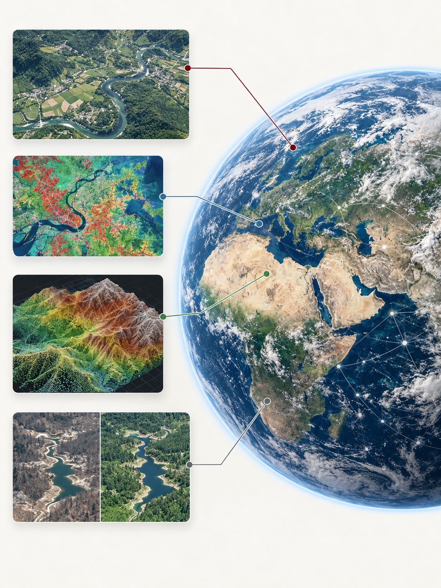

About & Vision
The Environmental Intelligence Lab (EIL) brings together GeoAI, Earth observation and environmental science to understand how our planet is changing. We are based in the School of Geographical Sciences at the University of Bristol.
Environmental systems are observed at many scales, from individual trees and rivers to whole landscapes and cities. Our research develops geospatial AI, foundation models and multimodal learning methods that turn these observations into evidence about ecosystems, environmental hazards and socio-ecological change. We work across land and water, with a particular interest in the landscapes where environmental change is most visible and consequential.
Our vision is environmental intelligence that is scientifically grounded, transparent about uncertainty and useful beyond the laboratory. We aim to build methods that transfer across places, sensors and environmental contexts, and to work with researchers, public agencies and communities to support better decisions in a changing world.

Our mission
To develop trustworthy geospatial intelligence for understanding environmental change and supporting more resilient socio-ecological systems.